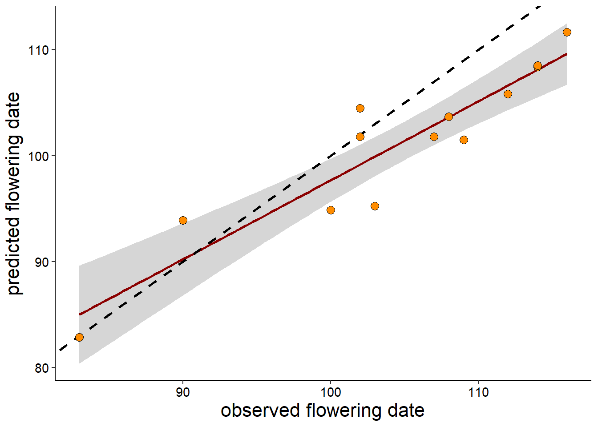
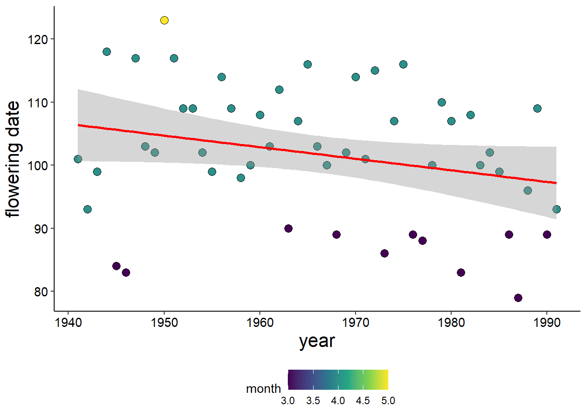

16 Exploratory Analysis
Learning Objectives
After completing this tutorial you should be able to
- identify specific steps to explore a new data set
- formulate a question and determine if your data set is appropriate to answer it
- refine questions based on data contained in a data set
- outline a strategy for data exploration using graphs
Download the 04_ExploratoryAnalysis project folder. Once you have downloaded it, unzip the project directory into your BI449 directory.
To get some practice setting up your own project files, you might notice that this one does not yet have an Rproj file or any Rmarkdown files in it. So the first thing we want to do is create a new R project. To do this open Rstudio then use the dropdown menu in the top right corner to select New Project and from there New Project in an existing directory. From there, navigate to and select the project create an R project.
Once you have created and opened the project you should see the project name in the top right corner per usual92 Pro tip: If you run into issues where an Rmarkdown won’t render or file paths aren’t working (especially if things were working previously) one of your first steps should be to double check that the correct Rproj is loaded..
Open a new Rmd file using File > New File > R Markdown or the drop down menu of the green plus button below File and save it in your Visualization/Climate Change project directory. That’s right - training wheels are off … you will need to add all of your own headers, plain text etc. Set up the YAML header so that you are the author and when knitted the date will reflect the date of the creation of the document.
When you create a new Rmarkdown file, it loads a template, i.e. it shows you standard formatting options, it also means that you already have content so e.g. if you wanted to test out that you have your YAML header set up correctly or you are testing out a new theme, you could just knit the file and see what happens. Of course, since you are going to add your own content you should delete that automatically inserted content.
Now that you have some experience using Rmarkdown files to document your work in a reproducible way, you have probably started making a list of preferences (e.g. printing chunk out put in the console or in the document itself) and a list of things you find annoying. We have already seen a few options to customize individual code chunks by adding arguments between the curly brackets. r indicates the engine (coding language) and we’ve also inserted fig.height and fig.width to alter the plot size in the final knitted document.
You can also use the setup chunk to set global settings, i.e. set certain things once for the entire document.
When you opened a new Rmarkdown file, you should have seen a code chunk in the very top that has been named setup^[you can name any code chunk by inserting a name right after indicating r as your engine. This can be helpful because you can use the navigation menu to navigate directly to a code chunk.]); you will also see that it has the additional argumentinclude=FALSEbetween the curly brackets. This means that when you knit your document, that code chunk will be run, but the code itself will not be visible in the knittedhtml` document.
In that code chunk you should see knitr::opts_chunk$set(echo = TRUE) - this is already setting a global format for all codes which is that when you knit the document it will print (echo) the code chunk itself and not just the output. You can add additional arguments e.g. warning = FALSE, error = FALSE, message = FALSE will turn off the messages, warnings and errors being printed out when knitting the document93 You will still see them in the console so you can still troubleshoot a needed, it just means you don’t have it included in the outcome fo your document.
Remember, you should always check your html document after it knits to make sure that everything has converted as expected, including your figures, bullet points etc.
Let’s load our packages so we can get started. You will likely have to install janitor and skimr before you can load them94 Remember, you only have to do this once … this is the type of thing where it is more convenient to run it directly in the console so it is not re-run every time you knit your document..
# load libraries
library(tidyverse)
library(skimr)
library(janitor)
library(knitr)
# turn of sci notation
options(scipen=999)16.1 Exploratory Analysis
The goal of exploratory analysis is systematic way of exploring data set primarily through visualizations. It generally is an iterative process that starts with a question or hypothesis. Most of your exploratory analysis consists of visualizing, transforming, and even modeling your data to answer that question. Finally, your would summarize your results and conclusions and use that to refine your original question or generate new questions. It frequently is the first step before deciding on what your formal analysis will look like and can serve to generate hypothesis for further exploration.
Part of exploratory analysis is quality control of your data, determining if it meets your expectations and cleaning it up as needed. Frequently it includes using the existing raw data to transform your data into parameters that are more useful for your assessment.
16.2 Formulate a question
Recall, from our visualization of Climate Change indicators that we left the question of whether or not hurricanes are going “to get worse” unresolved even after comparing both changes in the number of names storms, major hurricanes, and the intensity.
Let’s say we wanted to explore whether or not natural disasters have gotten worse as climate change has progressed. To do this we can turn to the International Disaster Database.
► Question 16.1
Go to their website and use information you can find about the data collected to answer the following questions (use bullet points where appropriate):
- How is (emergency) disaster defined?
- What are the major classifications of natural disasters included in the data set?
- Which of these categories do you think are most likely impacted by climate change?
- What measures can you use to determine if natural disasters are “getting worse?” Should different categories have different measures?
- What other mechanisms do you think could result in an increase in natural disasters?
► Question 16.2
“Are natural disasters getting worse” is a pretty general question. Based on your overview of what is in the data set, try to formulate three more specific questions that you could explore using this data set.
16.3 Read & Wrangle data set
You should have a copy of the tab-delimited file in your data folder. It contains an additional 6 lines at the top that have information on when and where it was downloaded.
disaster <- read_delim("data/nat-disasters_emdat-query-2021-10-05.txt", delim = "\t", skip = 6)Our first step always is to take a look at the data set and make sure that it has read in correctly (i.e. that the columns are correctly separated, numeric columns are numeric, character columns are characters etc.) and is in a usable format.
► Question 16.3
Take a quick look at the data set using View() to make sure everything has read in correctly. Quickly skim to get an idea of how many columns/rows there are, how much missing data there is, that data types are correct etc.
Even though data has read in correctly does not necessarily mean that it is in the most use-able format … remember plotting and filtering data sets requires typing variable names in over and over again. Therefore, we want to make sure that everything is set up in a way where we will be able to avoid mistakes that are mostly due to typos.
For example, let’s take a look at the column names:
colnames(disaster)## [1] "Dis No" "Year" "Seq" "Glide"
## [5] "Disaster Group" "Disaster Subgroup" "Disaster Type" "Disaster Subtype"
## [9] "Disaster Subsubtype" "Event Name" "Country" "ISO"
## [13] "Region" "Continent" "Location" "Origin"
## [17] "Associated Dis" "Associated Dis2" "OFDA Response" "Appeal"
## [21] "Declaration" "Aid Contribution" "Dis Mag Value" "Dis Mag Scale"
## [25] "Latitude" "Longitude" "Local Time" "River Basin"
## [29] "Start Year" "Start Month" "Start Day" "End Year"
## [33] "End Month" "End Day" "Total Deaths" "No Injured"
## [37] "No Affected" "No Homeless" "Total Affected" "Reconstruction Costs ('000 US$)"
## [41] "Insured Damages ('000 US$)" "Total Damages ('000 US$)" "CPI" "Adm Level"
## [45] "Admin1 Code" "Admin2 Code" "Geo Locations"Apparently, they have not read our guidelines for naming things. Column headers with special characters and spaces are super annoying, you might recall from our previous adventures in data wrangling that every time we want to call a column with spaces we are going to have to use back ticks to tell R that it isn’t separate words but a single name.
Now is probably a good time to learn how to rename columns. The most straightforward way is using rename().
Let’s say we wanted to rename Dis No to DisNo the syntax is simple NewName = OldName.
disaster %>%
rename(DisNo = `Dis No`) %>%
head()## # A tibble: 6 x 47
## DisNo Year Seq Glide `Disaster Group` `Disaster Subgro~ `Disaster Type` `Disaster Subtyp~ `Disaster Subsu~ `Event Name` Country ISO Region
## <chr> <dbl> <chr> <chr> <chr> <chr> <chr> <chr> <chr> <chr> <chr> <chr> <chr>
## 1 1900-9~ 1900 9002 <NA> Natural Climatological Drought Drought <NA> <NA> Cabo V~ CPV Wester~
## 2 1900-9~ 1900 9001 <NA> Natural Climatological Drought Drought <NA> <NA> India IND Southe~
## 3 1902-0~ 1902 0012 <NA> Natural Geophysical Earthquake Ground movement <NA> <NA> Guatem~ GTM Centra~
## 4 1902-0~ 1902 0003 <NA> Natural Geophysical Volcanic activi~ Ash fall <NA> Santa Maria Guatem~ GTM Centra~
## 5 1902-0~ 1902 0010 <NA> Natural Geophysical Volcanic activi~ Ash fall <NA> Santa Maria Guatem~ GTM Centra~
## 6 1903-0~ 1903 0006 <NA> Natural Geophysical Mass movement (~ Rockfall <NA> <NA> Canada CAN Northe~
## # ... with 34 more variables: Continent <chr>, Location <chr>, Origin <chr>, Associated Dis <chr>, Associated Dis2 <chr>, OFDA Response <chr>,
## # Appeal <chr>, Declaration <chr>, Aid Contribution <dbl>, Dis Mag Value <dbl>, Dis Mag Scale <chr>, Latitude <chr>, Longitude <chr>,
## # Local Time <chr>, River Basin <chr>, Start Year <dbl>, Start Month <dbl>, Start Day <dbl>, End Year <dbl>, End Month <dbl>, End Day <dbl>,
## # Total Deaths <dbl>, No Injured <dbl>, No Affected <dbl>, No Homeless <dbl>, Total Affected <dbl>, Reconstruction Costs ('000 US$) <lgl>,
## # Insured Damages ('000 US$) <dbl>, Total Damages ('000 US$) <dbl>, CPI <dbl>, Adm Level <chr>, Admin1 Code <chr>, Admin2 Code <chr>,
## # Geo Locations <chr>This would be pretty annoying if we wanted to rename all of our columns by hand.
Fortunately, we can leverage the function janitor::clean_names() function95 the notation format you see here specifies the Rpackage and then the function within it, as package::function(). which is designed to parse letter cases and separators - the default is to convert it to snake_case, i.e. all names are lowercase and words are separated by an underscore, it also deals with duplicate names and special characters.
Let’s see what this does for us:
disaster <- read_delim("data/nat-disasters_emdat-query-2021-10-05.txt", delim = "\t", skip = 6) %>%
clean_names()
head(disaster)## # A tibble: 6 x 47
## dis_no year seq glide disaster_group disaster_subgro~ disaster_type disaster_subtype disaster_subsub~ event_name country iso region continent
## <chr> <dbl> <chr> <chr> <chr> <chr> <chr> <chr> <chr> <chr> <chr> <chr> <chr> <chr>
## 1 1900-9~ 1900 9002 <NA> Natural Climatological Drought Drought <NA> <NA> Cabo V~ CPV Weste~ Africa
## 2 1900-9~ 1900 9001 <NA> Natural Climatological Drought Drought <NA> <NA> India IND South~ Asia
## 3 1902-0~ 1902 0012 <NA> Natural Geophysical Earthquake Ground movement <NA> <NA> Guatem~ GTM Centr~ Americas
## 4 1902-0~ 1902 0003 <NA> Natural Geophysical Volcanic act~ Ash fall <NA> Santa Mar~ Guatem~ GTM Centr~ Americas
## 5 1902-0~ 1902 0010 <NA> Natural Geophysical Volcanic act~ Ash fall <NA> Santa Mar~ Guatem~ GTM Centr~ Americas
## 6 1903-0~ 1903 0006 <NA> Natural Geophysical Mass movemen~ Rockfall <NA> <NA> Canada CAN North~ Americas
## # ... with 33 more variables: location <chr>, origin <chr>, associated_dis <chr>, associated_dis2 <chr>, ofda_response <chr>, appeal <chr>,
## # declaration <chr>, aid_contribution <dbl>, dis_mag_value <dbl>, dis_mag_scale <chr>, latitude <chr>, longitude <chr>, local_time <chr>,
## # river_basin <chr>, start_year <dbl>, start_month <dbl>, start_day <dbl>, end_year <dbl>, end_month <dbl>, end_day <dbl>, total_deaths <dbl>,
## # no_injured <dbl>, no_affected <dbl>, no_homeless <dbl>, total_affected <dbl>, reconstruction_costs_000_us <lgl>, insured_damages_000_us <dbl>,
## # total_damages_000_us <dbl>, cpi <dbl>, adm_level <chr>, admin1_code <chr>, admin2_code <chr>, geo_locations <chr>That looks much better. Similar to running head() to make sure the first set of lines has read in properly, running tail() gives you a quickly look at whether the end of the file read in correctly as well.
16.4 Get an overview of the data set
Our next step always is to determine what information is contained in the data set and how it is organized.
First, we will need to understand what information is contained in each column. Some of the column headers are more self-explanatory than others. One of the most helpful documents at this point is the metadata which will tell us what information is in each column. A good place to look for that is the data portal where you accessed the data set itself.
► Question 16.4
Determine where you can find meta-data for our data set and describe what information is contained in the data set based on the included columns. Indicate which you think will be most useful to answer our general question based on your answers to Q1.
Now, we can take a look at some of the specifics of how the information is organized in the data set and specifics on the information contained.
► Question 16.5
Based on some of our previous exploits exploring data, come up with a checklist of at least five things to routinely check any time you are exploring a new data set, wherever possible include what function(s) you could use to look at that.
► Solution
Another helpful functions is skimr::skim()
► Question 16.6
Run the function on your data set and briefly describe what information you can get from it.
skim(disaster)Table 16.1: Data summary
| Name | disaster |
| Number of rows | 16121 |
| Number of columns | 47 |
| _______________________ | |
| Column type frequency: | |
| character | 29 |
| logical | 1 |
| numeric | 17 |
| ________________________ | |
| Group variables | None |
Variable type: character
| skim_variable | n_missing | complete_rate | min | max | empty | n_unique | whitespace |
|---|---|---|---|---|---|---|---|
| dis_no | 0 | 1.00 | 13 | 13 | 0 | 16121 | 0 |
| seq | 0 | 1.00 | 4 | 4 | 0 | 1274 | 0 |
| glide | 14540 | 0.10 | 4 | 25 | 0 | 1086 | 0 |
| disaster_group | 0 | 1.00 | 7 | 7 | 0 | 1 | 0 |
| disaster_subgroup | 0 | 1.00 | 10 | 17 | 0 | 6 | 0 |
| disaster_type | 0 | 1.00 | 3 | 21 | 0 | 15 | 0 |
| disaster_subtype | 3109 | 0.81 | 6 | 32 | 0 | 27 | 0 |
| disaster_subsubtype | 15044 | 0.07 | 4 | 23 | 0 | 12 | 0 |
| event_name | 12263 | 0.24 | 2 | 76 | 0 | 1561 | 0 |
| country | 0 | 1.00 | 4 | 58 | 0 | 228 | 0 |
| iso | 0 | 1.00 | 3 | 3 | 0 | 228 | 0 |
| region | 0 | 1.00 | 9 | 25 | 0 | 23 | 0 |
| continent | 0 | 1.00 | 4 | 8 | 0 | 5 | 0 |
| location | 1792 | 0.89 | 3 | 2878 | 0 | 12755 | 0 |
| origin | 12329 | 0.24 | 4 | 118 | 0 | 660 | 0 |
| associated_dis | 12774 | 0.21 | 3 | 29 | 0 | 30 | 0 |
| associated_dis2 | 15415 | 0.04 | 3 | 29 | 0 | 30 | 0 |
| ofda_response | 14427 | 0.11 | 3 | 3 | 0 | 1 | 0 |
| appeal | 13552 | 0.16 | 2 | 3 | 0 | 2 | 0 |
| declaration | 12866 | 0.20 | 2 | 3 | 0 | 2 | 0 |
| dis_mag_scale | 1190 | 0.93 | 3 | 10 | 0 | 5 | 0 |
| latitude | 13393 | 0.17 | 1 | 10 | 0 | 2372 | 0 |
| longitude | 13390 | 0.17 | 1 | 12 | 0 | 2438 | 0 |
| local_time | 15019 | 0.07 | 4 | 8 | 0 | 778 | 0 |
| river_basin | 14835 | 0.08 | 1 | 402 | 0 | 1213 | 0 |
| adm_level | 8262 | 0.49 | 1 | 3 | 0 | 3 | 0 |
| admin1_code | 11540 | 0.28 | 3 | 399 | 0 | 3434 | 0 |
| admin2_code | 12152 | 0.25 | 3 | 1571 | 0 | 3446 | 0 |
| geo_locations | 8262 | 0.49 | 10 | 2525 | 0 | 6355 | 0 |
Variable type: logical
| skim_variable | n_missing | complete_rate | mean | count |
|---|---|---|---|---|
| reconstruction_costs_000_us | 16121 | 0 | NaN | : |
Variable type: numeric
| skim_variable | n_missing | complete_rate | mean | sd | p0 | p25 | p50 | p75 | p100 | hist |
|---|---|---|---|---|---|---|---|---|---|---|
| year | 0 | 1.00 | 1996.76 | 20.16 | 1900.00 | 1989.00 | 2001.00 | 2011.00 | 2021 | ▁▁▁▃▇ |
| aid_contribution | 15444 | 0.04 | 125413.61 | 2997874.55 | 1.00 | 175.00 | 721.00 | 3511.00 | 78000000 | ▇▁▁▁▁ |
| dis_mag_value | 11177 | 0.31 | 47369.51 | 309485.37 | -57.00 | 7.00 | 152.00 | 11315.00 | 13025874 | ▇▁▁▁▁ |
| start_year | 0 | 1.00 | 1996.77 | 20.15 | 1900.00 | 1989.00 | 2001.00 | 2011.00 | 2021 | ▁▁▁▃▇ |
| start_month | 387 | 0.98 | 6.44 | 3.39 | 1.00 | 4.00 | 7.00 | 9.00 | 12 | ▇▅▆▆▇ |
| start_day | 3628 | 0.77 | 15.24 | 8.95 | 1.00 | 7.00 | 15.00 | 23.00 | 31 | ▇▆▆▆▅ |
| end_year | 0 | 1.00 | 1996.83 | 20.14 | 1900.00 | 1989.00 | 2001.00 | 2011.00 | 2021 | ▁▁▁▃▇ |
| end_month | 708 | 0.96 | 6.58 | 3.35 | 1.00 | 4.00 | 7.00 | 9.00 | 12 | ▇▅▆▇▇ |
| end_day | 3556 | 0.78 | 15.78 | 8.87 | 1.00 | 8.00 | 16.00 | 24.00 | 31 | ▇▇▇▇▆ |
| total_deaths | 4713 | 0.71 | 2844.11 | 68620.96 | 1.00 | 6.00 | 20.00 | 63.00 | 3700000 | ▇▁▁▁▁ |
| no_injured | 12227 | 0.24 | 2621.70 | 34407.82 | 1.00 | 14.00 | 50.00 | 200.00 | 1800000 | ▇▁▁▁▁ |
| no_affected | 6903 | 0.57 | 882551.63 | 8574833.40 | 1.00 | 1245.50 | 10000.00 | 91941.00 | 330000000 | ▇▁▁▁▁ |
| no_homeless | 13692 | 0.15 | 73323.11 | 523111.36 | 3.00 | 574.00 | 3000.00 | 17500.00 | 15850000 | ▇▁▁▁▁ |
| total_affected | 4507 | 0.72 | 716692.93 | 7719586.75 | 1.00 | 650.00 | 5967.00 | 58255.00 | 330000000 | ▇▁▁▁▁ |
| insured_damages_000_us | 15025 | 0.07 | 798651.42 | 3057638.17 | 34.00 | 50000.00 | 172500.00 | 500000.00 | 60000000 | ▇▁▁▁▁ |
| total_damages_000_us | 10876 | 0.33 | 724783.54 | 4723130.53 | 2.00 | 8300.00 | 60000.00 | 317300.00 | 210000000 | ▇▁▁▁▁ |
| cpi | 310 | 0.98 | 63.22 | 26.73 | 3.22 | 45.69 | 68.42 | 84.25 | 100 | ▃▂▅▇▇ |
For numerical columns mean values and percentiles can give you an overview of how the data is distributed. However for columns that contain strings or characters we cannot produce those types of summary statistics. Rather, we are probably more interested on how many unique values those columns contain and what those unique entries are.
skim() already gave us the number of unique entries for each column, we have two options we can use to determine what those values are. The first is unique(). This function makes use of the fact that each column is a vector96 Remember, we can access each column of a dataframe as `df$columnname.
unique(disaster$disaster_subgroup)## [1] "Climatological" "Geophysical" "Meteorological" "Hydrological" "Biological" "Extra-terrestrial"When you run this function it returns a vector; while this might be helpful in some contexts, it would be helpful if we could also view it in a tabular format. Do not fret - tidyverse got you.
disaster %>%
distinct(disaster_subgroup)## # A tibble: 6 x 1
## disaster_subgroup
## <chr>
## 1 Climatological
## 2 Geophysical
## 3 Meteorological
## 4 Hydrological
## 5 Biological
## 6 Extra-terrestrial16.5 Chose a question to explore
Frequently you will have a general question (which is why you pulled a data set in the first place); in this case “Are natural disasters getting worse with climate change?”
There may be more than one way to go after that question … and you might need some additional exploration of the data set to generate additional questions (hypothesis) and ultimately find the one you are mot interested in.
In this case, we could focus on whether we are indeed observing an increase in frequency of events and/or we could compare if different groups of natural disasters that are more dependent on climate/weather conditions (storms, hurricanes) are increase more rapidly compared to categories that have other origins (e.g. earthquakes or volcanic eruptions).
Or, we could have already done some analysis (or background reading) that indicates that natural disasters linked to climate patterns are indeed predicted to get worse based on modeling. In that case we might be more interested whether the impact of natural disasters on humans is getting increasingly worse. We could be at a point where at least some of the changes to the climate system are inevitable and in that case the question of mitigation of effects and preparedness like early warning systems or infrastructure become more important. We cannot stop the events from happening but to an extent we can control how well we can deal with them.
Exploratory Analysis is fundamentally a very creative process and thinking outside the box can be what sets your analysis apart from what everyone else is doing. However, before we can start thinking outside the box we need to first figure out what “the box is” and use that as our starting point. This does mean you should always start with the boring standard stuff, cover your bases and then from there work towards something more interesting - though sometimes the “boring” stuff is the most revealing!
16.6 Plot the data!
While tables are sometimes more appropriate, most exploratory analysis involves generating plots that help you get an overview of the data in relation to your question.
► Question 16.7
We should make a distinction between exploratory figures and explanatory or final figures. Briefly contrast the two in terms of their goal and audience and how this might be reflected in the presentation of the visualization.
A good place to start is to get an idea of the variation or variance of the data you are interested in.
► Question 16.8
List 3 - 5 ways that you can assess the variance of a measured value. What metrics can you calculate and what options do we have to visualize?
► Solution
Let’s start by figuring out how many observations fall into each sub-category of natural disasters97 We finally get to see the alternative to stat = "identity" in using barplots! To plot distribution of categorical variable you are now telling ggplot to count the number of observations for each category.
ggplot(disaster, aes(x = disaster_subgroup)) +
geom_bar(stat = "count")and we could do the same for our disaster types.
ggplot(disaster, aes(x = disaster_type)) +
geom_bar(stat = "count")
We probably want to be able to read those labels
ggplot(disaster, aes(x = disaster_type)) +
geom_bar(stat = "count") +
theme(axis.text.x = element_text(angle = 90, vjust = 0.5, hjust=1))
This is giving us global numbers, we might want to break it up by region.
ggplot(disaster, aes(x = disaster_type)) +
geom_bar(stat = "count") +
facet_wrap(. ~ region) +
theme(axis.text.x = element_text(angle = 90, vjust = 0.5, hjust=1))
If we want to think specifically about whether impact is increasing we should filter our data set to include only events for which damages where assessed.
Let’s create new object with only those observations and then get an overview of distribution of the damage incurred.
damages <- disaster %>%
filter(!is.na(total_damages_000_us))
ggplot(damages, aes(x = total_damages_000_us)) +
geom_histogram()
That looks like we might have some outliers that are skewing our histogram. We can try looking at e.g. a square root scale, which skews the y-axis in a systematic way98 This is the type of thing where in order to not be unintentionally mislead you would always want to add “Note, the skewed y-scale”.
ggplot(damages, aes(x = total_damages_000_us)) +
geom_histogram() +
scale_y_sqrt() Another way would be to set the binwidths manually, let’s also divide our dollar amounts by 1,000,000 to make the x-axis more legible.
Another way would be to set the binwidths manually, let’s also divide our dollar amounts by 1,000,000 to make the x-axis more legible.
ggplot(damages, aes(x = total_damages_000_us/1000000)) +
geom_histogram(binwidth = 5)
Let’s look at variation within different disaster types.
ggplot(damages, aes(x = total_damages_000_us/1000000)) +
geom_histogram(binwidth = 5) +
facet_wrap(. ~ disaster_type) It looks like we might want to limit our assessment to droughts, earthquakes, wildfires, floods, and storms. To make these comparisons if might be more helpful to switch to a boxplot.
It looks like we might want to limit our assessment to droughts, earthquakes, wildfires, floods, and storms. To make these comparisons if might be more helpful to switch to a boxplot.
damages <- damages %>%
filter(disaster_type %in% c("Drought", "Earthquake", "Flood", "Storm", "Wildfire"))
ggplot(damages, aes(x = disaster_type, y = total_damages_000_us/1000000)) +
geom_boxplot() We can also quickly calculate a set of summary stats for comparison
damages %>%
group_by(disaster_type) %>%
summarize(mean = mean(total_damages_000_us)/1000000,
sd = sd(total_damages_000_us)/1000000,
min = min(total_damages_000_us)/1000000,
max = max(total_damages_000_us)/1000000) %>%
kable()| disaster_type | mean | sd | min | max |
|---|---|---|---|---|
| Drought | 0.8805004 | 2.045504 | 0.000050 | 20.0 |
| Earthquake | 1.4403066 | 10.581451 | 0.000002 | 210.0 |
| Flood | 0.4972023 | 1.992408 | 0.000003 | 40.0 |
| Storm | 0.7409707 | 4.311794 | 0.000005 | 125.0 |
| Wildfire | 0.7286744 | 2.037236 | 0.000600 | 16.5 |
After you’ve explored patterns within variables you are interested in you are also going to want to explore relationships (Covariation) among variables99 Remember, when we start looking at correlation, we always need to be careful about how/when we infer causation!.
► Question 16.9
List 3 - 5 ways that you can assess the covariance of a measured value.
► Solution
We have already spent a little bit of time looking at more than one variable by looking at subgroups with in our data set, in this case the disaster types and regional differences. In our case the relationship we are really interested in is change over time. This means we are comparing two continuous values but it is a specific comparison we frequently describe as a time-series.
Let’s take a look
ggplot(damages, aes(x = year, y = total_damages_000_us/1000000)) +
geom_point() We could enhance this figure by e.g. color coding by disaster type.
We could enhance this figure by e.g. color coding by disaster type.
ggplot(damages, aes(x = year, y = total_damages_000_us/1000000, fill = disaster_type)) +
geom_point(shape = 21) Or we could color code by continent and make individual panels for different disaster types.
ggplot(damages, aes(x = year, y = total_damages_000_us/1000000, color = continent)) +
geom_point() +
facet_wrap(. ~ disaster_type) An alternative approach might be assess whether we are seeing changes in scale of each disaster and whether those show the same pattern as damages incurred, because the question we are really after is whether despite frequency and intensity increasing (or at least predicted to increase) that is also resulting in a scaling up of the damages.
An alternative approach might be assess whether we are seeing changes in scale of each disaster and whether those show the same pattern as damages incurred, because the question we are really after is whether despite frequency and intensity increasing (or at least predicted to increase) that is also resulting in a scaling up of the damages.
Each of these has a different way of being measure so we will need to look at each disaster type in turn.
damages %>%
filter(disaster_type == "Storm") %>%
ggplot(aes(x = dis_mag_value, y = total_damages_000_us/1000000, color = year)) +
geom_point() +
scale_color_viridis_c()
damages %>%
filter(disaster_type == "Flood") %>%
ggplot(aes(x = dis_mag_value, y = total_damages_000_us/1000000, color = year)) +
geom_point() +
scale_color_viridis_b()damages %>%
filter(disaster_type == "Earthquake") %>%
ggplot(aes(x = dis_mag_value, y = total_damages_000_us/1000000)) +
geom_point()damages %>%
filter(disaster_type == "Drought") %>%
ggplot(aes(x = dis_mag_value, y = total_damages_000_us/1000000)) +
geom_point()damages %>%
filter(disaster_type == "Wildfire") %>%
ggplot(aes(x = dis_mag_value, y = total_damages_000_us/1000000)) +
geom_point()
The final step is starting to ask whether patterns are specific to the data set or whether there are true non-random relationships between variables. Typical questions we might further explore at this point include e.g.
- Is this pattern due to random change or does the independent variable have significant explanatory power?
- How can the relationship implied by the pattern be described (e.g. linear regression)?
- How strong is the relationship (R2 value)?
- What other variables might affect or explain the relationship (e.g. are these variable correlated because they are both correlated to another variable that is responsible for the mechanism?)
- Does this relationship hold across subgroups of the relationship itself?
Fitting trend lines helps elucidate patterns (especially in time series). This is frequently where exploratory analysis transitions into a more formal analysis that involves statistical tests and fitting models. Keep in mind that we want to have a good grasp on whether our analysis is descriptive, inferential or causal/mechanistic in nature. Exploratory analysis is “quick and dirty,” you are mainly focused on summarizing the data and highlighting broad-scale patterns that emerge. They are useful for assessing the quality of your data, eye-balling if patterns are what you expect (was your hypothesis correct(ish)), and getting and idea of what the next steps in a more formal analysis should be.
We could for example consider that we know have much better records in terms of when disasters occur and what the damages are and we may need to refine our analysis by limiting our data to a shorter time span. We might also want to determine if we see the same patterns for loss of life. Additionally, while we have played around with regional differences, that is also something to explore in light of expectations of e.g. better early warning systems and infrastructure in developed countries.
16.7 Iterate your exploration
Now that we have an answer(ish) to our question - the first thing we should do is question our answer100 especially if your answer conforms to your a priori expectations!. Always consider limitations of your data, whether there are alternative explanations, if your data has some inherent issues you need to be aware of etc. It can also be helpful to find at least one external data source to assess whether your answers are roughly in line with other (expected) measurements.
It is called an exploratory analysis for a reason, because it is just the beginning. Usually this is the beginning of a more sophisticated analysis. Important questions to ask always include
- Is your data appropriate for the question your are asking?
- Do you need additional data to refine your answer?
- Do you have the right question or do you need to refine your question?
Exploratory Analysis frequently is more about hypothesis generating, rather than hypothesis testing. So you data exploration can be an important step to defining the precise (set of) question(s) you want to explore. Not infrequetly, the exploration of an intial question leads you to generating additional (perhaps more interesting) questions.
16.8 Now you!
As you suspected, training wheels are coming off.
► Question 16.10
Formulate three specific questions this data set can answer, consider that you have options like looking at specific geographic subsets, or different categories of natural disasters, you can also consider whether your would expect different types of natural disasters to show similar or different patterns.
Use headers, plain text, code chunks etc. as appropriate to write a mini report for each question - this should include stating your question as concisely as possible, exploratory figures, final explanatory figure, description & discussion of your results. Comment your code to generate your figures line by line with descriptive comments.
For each question, generate 3 - 5 exploratory figures that can help answer your question, these can include different visualizations of the same variables or different variables. In each case, chose the figure that summarizes your results best and refine your visualization so that it best summarizes your results, this includes a figure title, labeled axis, color choice, how data is encoded etc.
Write a figure legend that would accompany your figure in a report or paper, write a 3 - 5 sentence description of each figure (i.e. this should communicate the results with sufficient detail that somebody who has not seen the figure still fully understand them) and briefly discuss your results in 3-5 sentences in the context of the question you were asking (i.e. what are your conclusions, are there limitation to your data, alternative explanations, …).
Chose one question + figure legend, description, and discussion and share it in our #hwassignments channel on slack.
► Question 16.11
Take a look your classmate’s posts on slack, identify what you like about the visualization along with some constructive points for improvement. Getting feedback is really important. Our goal is clear communication; you have spent more time thinking about this question and the visualization so some things might be obvious to you that others might not catch right away, similar a set of colors might look good to you, but somebody else might struggle to tell things apart. The figure might be too busy etc. Sometimes it can also be helpful to have other people help you refine your question.
Page built: 2021-10-06 using R version 4.0.2 (2020-06-22)